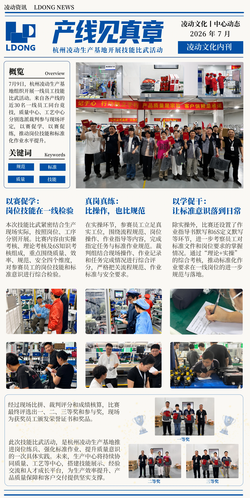
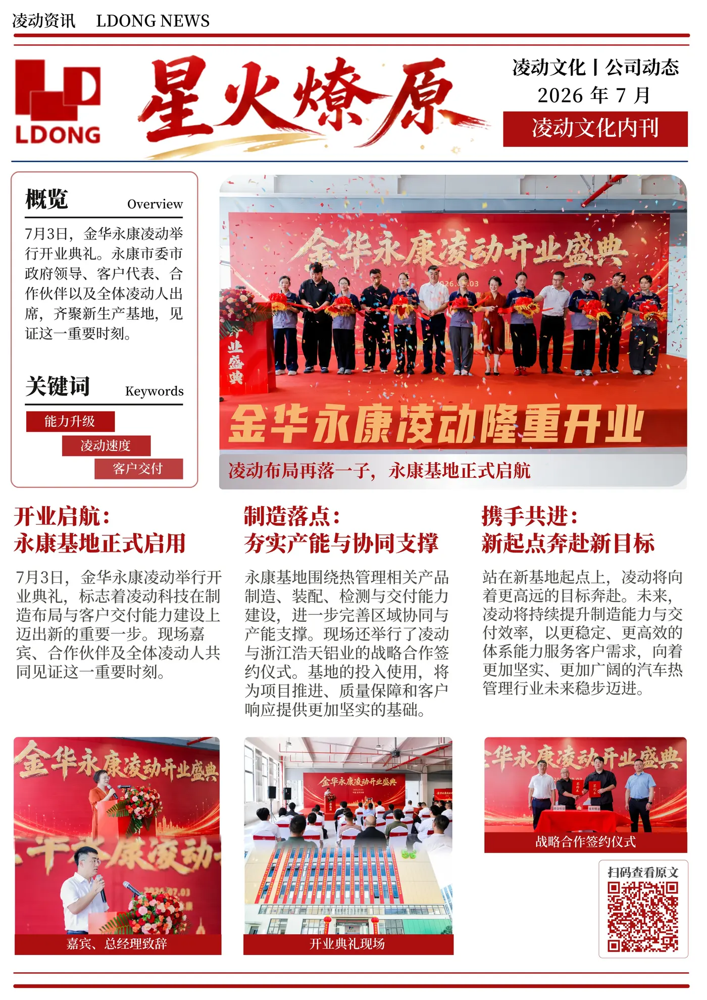
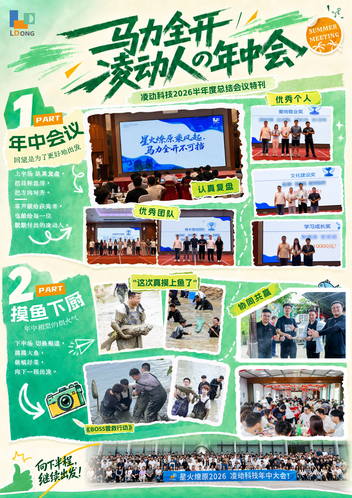
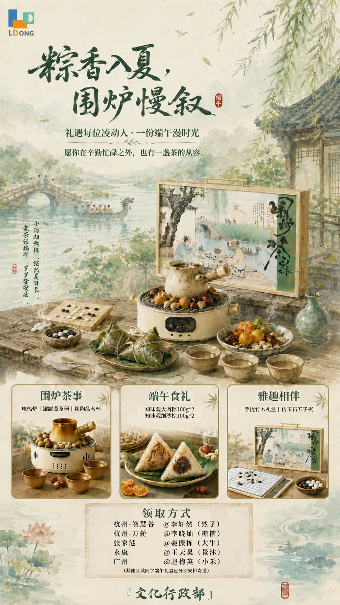
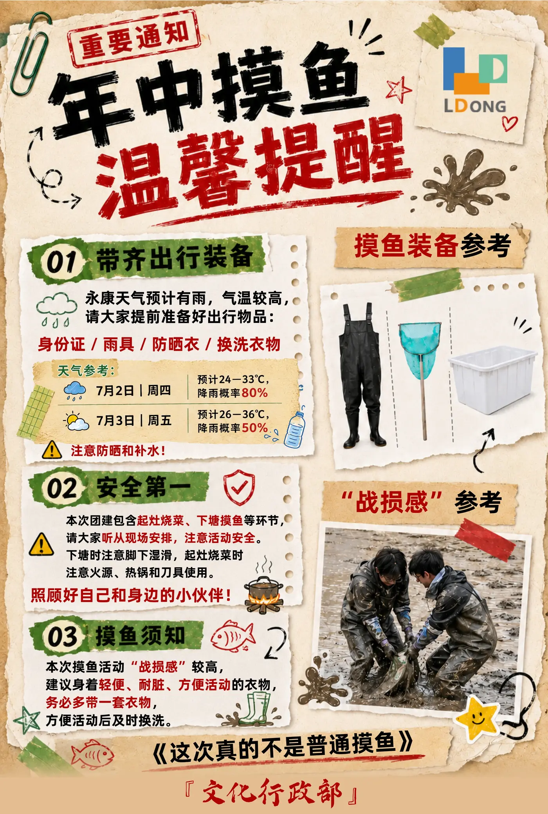
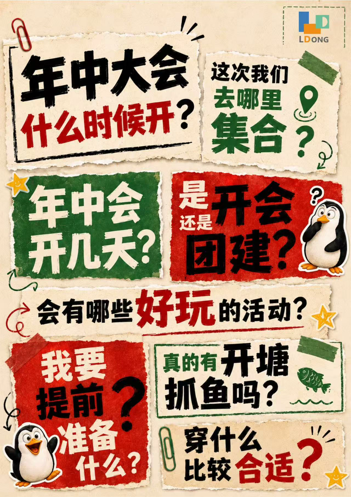

SELECTED WORK 06
VISUAL NOTESACROSS CHANNELS
视觉与内容小项目选集
有些工作不需要被展开成一个完整案例，却能记录内容如何进入不同的传播场景。
从文化刊物、节日内容和内部活动，到会议节点、钉钉开屏与制造现场视频，我更关注的始终不是某一种固定形式，而是根据内容、受众与媒介，找到合适的表达方式。


01 / EDITORIAL
把内部内容，
做得更值得阅读
围绕企业文化、人物与组织内容进行版式与视觉表达，在信息清晰的基础上，让内部刊物拥有更完整的阅读节奏与视觉识别。



02 / MOMENTS
为不同的组织节点，
找到不同的语气
节日、内部活动与阶段性会议并不需要使用同一种企业表达。根据内容本身调整视觉气质，让传播既保留组织身份，也不过度模板化。



03 / DIGITAL
内容也需要适应
它出现的屏幕
同样的品牌语言进入办公软件、内部屏幕等数字场景后，需要重新考虑信息密度、观看距离与停留时间。

04 / MOTION
把制造现场，
转化成可理解的视觉内容
在工序与制造内容中，视觉不仅负责“拍得好看”，也需要帮助观众理解设备、流程与现场关系。
VISUAL NOTES / 06
Different scenes.
Different formats.
The same question:
What is the clearest way to tell this story?
媒介在变，最终需要回答的仍然是同一个问题：
这一次，怎样表达最合适？
SELECTED WORKS
返回更多项目 ↗Editorial · Internal Communication · Visual Content · Video